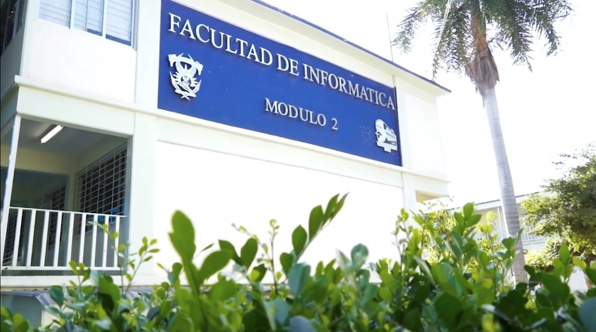

En los últimos años hemos sido testigos del vertiginoso avance de las Tecnologías de la Información (TI) y de su impacto en todos los campos de la actividad humana. Las TI son transversales a cualquier campo de estudio y podemos mencionar aplicaciones diversas, por ejemplo, en la educación, los negocios, la ciencia, la economía, la salud, la industria, las telecomunicaciones y la vida cotidiana, esto hace necesario realizar un nuevo estudio de mercado y pertinencia para una nueva reforma circular que permita cumplir con las necesidades del mercado y de la sociedad, presentándose un nuevo proceso de reforma en el año 2023.

| Carrera | Número de Alumnos |
|---|---|
| Licenciatura en Informática | 450 |
| Ingeniería en Sistemas Computacionales | 520 |
| Licenciatura en Ciencia de Datos | 180 |
| Ingeniería en Redes y Telecomunicaciones | 210 |